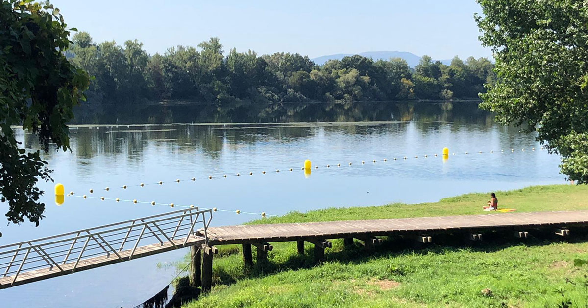

Visitando Tui
Tui es una ciudad de España, en la provincia de Pontevedra, comunidad autónoma de Galicia, situada en la parte oriental de la comarca del Bajo Miño. En ella se sitúa una de las catedrales más famosas de Galicia, la catedral de Santa María de Tui.
Que visitar:
- Catedral de tui
- Parque Natural do Monte Aloia
- Capela de San Telmo
- Paseo Fluvial
